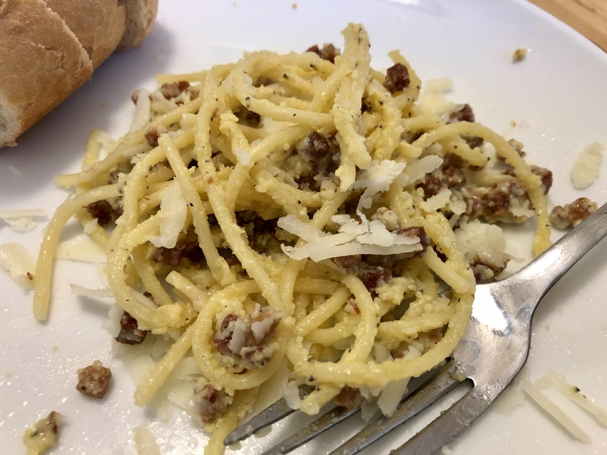

Based on a recipe from the New York Times
Personal rating: 5 / 5

2 large eggs
2 yolks
1/3 cup grated pecorino Romano (~1 oz), plus additional for serving
1/3 cup grated Parmesan (~1 oz)
Black Pepper
1 Tbsp olive oil
3.5 ounces Pancetta, sliced into small pieces
12 ounces spaghetti (about 3/4 box)
Boil a large pot of water
Prep the sauce in a glass mixing bowl, whisk, and set aside
With the olive oil, in a small pan, heat the pancetta under medium-low heat
Cook the spaghetti and turn up the heat on the pancetta to medium
Set one cup of pasta water aside
Serve immediately with a garnish of pecorino Romano and black pepper